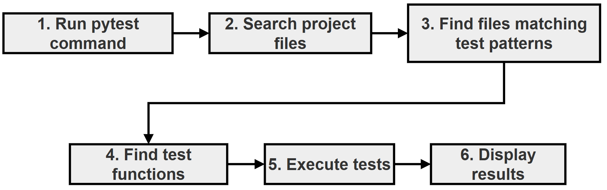
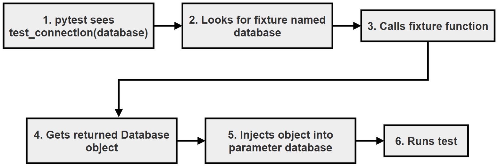

Conceptual Questions and Answers: pytest¶
This page brings together twenty conceptual questions on testing with pytest, with detailed answers. The questions cover the main ideas of this chapter: what unit testing is, how pytest finds and runs tests, assert, fixtures and their scopes, dependency injection, mocking, testing exceptions, parameterized tests, skipping and expected failures, conftest.py, and how to keep tests independent.
The questions are grouped by topic. Each answer explains the idea in simple steps, and many answers include a small "Try it yourself" script with its actual output, so you can see the idea in action and not just read about it. All the scripts are in one folder and are listed in Scripts for This Page and How to Run Them.
You can use this page to revise the chapter, to check your understanding before an exam or interview, or as a quick reference while writing your own tests. Testing is a core skill for every Python programmer: it is how you prove that your code works today and make sure it keeps working as it changes.
Table of Contents¶
- Conceptual Questions and Answers: pytest
- Key Terms Used on This Page
- Part A: Unit Testing Basics
- Part B: Fixtures
- 4. What is a fixture in pytest? Why are fixtures preferred over creating objects inside every test?
- 5. Explain pytest dependency injection using fixtures. Why does the fixture name become the test parameter name?
- 6. What is the difference between a fixture and a normal function?
- 7. What are fixture scopes? Why do they exist?
- 8. What is the difference between function scope and session scope fixtures?
- 9. Why can shared fixtures create problems?
- Part C: Mocking
- Part D: Testing Exceptions
- Part E: Parameterized Testing
- Part F: Skipping and Expected Failures
- Part G: Organising a Test Suite
- Scripts for This Page and How to Run Them
- Summary
- Further Reading
Key Terms Used on This Page¶
| Term | Simple Meaning | Learn More |
|---|---|---|
| Unit test | A small test that checks one piece of code, such as one function, on its own | Unit testing on Wikipedia |
| Test discovery | How pytest finds test files and test functions by their names | pytest: test discovery |
| Fixture | A function marked with @pytest.fixture that prepares something a test needs |
pytest: How to use fixtures |
| Scope | How widely a fixture is shared, and so how often it is created | pytest: fixture scopes |
| Dependency injection | Handing a function the objects it needs from outside, instead of letting it create them | Dependency injection on Wikipedia |
| Mock | A stand-in object whose behaviour you control, used in place of a real one | unittest.mock |
| Marker | A label such as @pytest.mark.skip attached to a test |
pytest: markers |
| Edge case | An unusual or extreme input, such as zero, a negative number or an empty list | Edge case on Wikipedia |
Part A: Unit Testing Basics¶
1. What is unit testing? Why do we test code even when the program runs correctly?¶
Answer:
Unit testing means testing small, independent parts of a program (usually single functions or methods) to check whether they behave as expected.
A program may run without any error message and still give wrong answers. For example, a function that should add 10% tax might add 1% because of a typing mistake. Nothing crashes, but the result is wrong. This kind of mistake is called a logical error, and only checking the results can find it.
Testing helps us:
- check that functions return correct results
- find out when a future change breaks behaviour that used to work (this is called a regression)
- check edge cases, such as zero, negative numbers or empty input
- confirm that error conditions are handled properly
A unit test usually follows three steps, known as Arrange, Act, Assert:
flowchart LR
A["1. Arrange: prepare the input"] --> B["2. Act: call the code being tested"]
B --> C["3. Assert: check the result"]
Example:
# Arrange
number = 10
# Act
result = square(number)
# Assert
assert result == 100
The purpose of testing is not only to find current mistakes, but also to protect the program from future mistakes. Once a test exists, it checks the same behaviour every time it is run, at no extra cost.
Try it yourself (calculator.py and test_q01_aaa.py):
# calculator.py
# Small functions used by the demo tests on this page.
def square(number):
return number * number
def add(a, b):
return a + b
def add_buggy(a, b):
# A deliberate bug, used to show pytest's failure messages
return a + b + 1
def set_age(age):
if age < 0:
raise ValueError("invalid age: age cannot be negative")
return age
# test_q01_aaa.py - Question 1: Arrange, Act, Assert
# Run it with: pytest -v test_q01_aaa.py
from calculator import square
def test_square_of_ten():
# Step 1 - Arrange: prepare the input
number = 10
# Step 2 - Act: call the code being tested
result = square(number)
# Step 3 - Assert: check the result
assert result == 100
def test_square_of_negative_number():
# An edge case: the square of a negative number is positive
assert square(-3) == 9
Run pytest -v test_q01_aaa.py:
============================= test session starts ==============================
platform win32 -- Python 3.10.10, pytest-9.0.3, pluggy-1.6.0 -- C:\Users\Anurag Gupta\AppData\Local\Programs\Python\Python310\python.exe
cachedir: .pytest_cache
rootdir: C:\qa-demo
plugins: anyio-4.12.1
collected 2 items
test_q01_aaa.py::test_square_of_ten PASSED [ 50%]
test_q01_aaa.py::test_square_of_negative_number PASSED [100%]
============================== 2 passed in 0.01s ===============================
The second test checks an edge case: a negative number.
2. How does pytest discover test files and test functions automatically?¶
Answer:
Pytest does not run every Python file. It follows naming rules to find tests. This is called test discovery.
The default rules are:
| Item | Naming Pattern |
|---|---|
| Test file | test_*.py or *_test.py |
| Test function | Name starts with test (usually written test_) |
| Test class | Name starts with Test, and the class has no __init__ method |
| Test method inside a test class | Name starts with test |
Example:
project/
│
├── calculator.py <-- not a test file (name does not start with test_)
│
└── test_calculator.py <-- test file
│
└── test_add() <-- test function
Execution flow:

The same flow, step by step:
flowchart TD
A["1. You type: pytest"] --> B["2. pytest searches the folder and its sub-folders"]
B --> C{"3. Does the file name match test_*.py or *_test.py?"}
C -- No --> D["4. Skip the file"]
C -- Yes --> E["5. Import the file"]
E --> F["6. Collect functions starting with test, and Test classes"]
F --> G["7. Run each collected test and record PASSED or FAILED"]
G --> H["8. Print the summary"]
This automatic discovery removes the need to call every test function yourself.
Two points that often confuse beginners:
- A helper function called
check_total()in a test file is not run as a test, because its name does not start withtest. This is useful for writing helper functions. - A class called
TestThingthat has an__init__method is not collected. Pytest shows the warningcannot collect test class 'TestThing' because it has a __init__ constructor.
Try it yourself: to see which tests pytest would find, without running them, use --collect-only (or --co):
pytest --collect-only -q test_q01_aaa.py
test_q01_aaa.py::test_square_of_ten
test_q01_aaa.py::test_square_of_negative_number
2 tests collected in 0.00s
3. What is the role of assert in pytest? Why does pytest use normal Python assert?¶
Answer:
In pytest, the assert statement checks expected behaviour.
Example:
assert result == expected
- If the condition is true, the test passes.
- If it is false, the test fails.
assert is ordinary Python, so there is nothing new to learn. Other testing tools need special methods such as assertEqual(a, b) or assertTrue(x). With pytest, you just write the condition you expect to be true.
Plain Python assert gives almost no information when it fails. Pytest improves this: before running a test file, it rewrites its assert statements behind the scenes so that, when one fails, it can show the actual values involved. This is called assertion rewriting. You can read more in the pytest guide on assertion introspection.
Try it yourself (test_q03_assert.py, which fails on purpose):
# test_q03_assert.py - Question 3: what pytest shows when an assert fails
# Run it with: pytest test_q03_assert.py
# This test FAILS on purpose.
from calculator import add_buggy
def test_add_two_and_two():
# 2 + 2 should be 4, but add_buggy has a deliberate bug
assert add_buggy(2, 2) == 4
Run pytest test_q03_assert.py. The key part of the output is:
=================================== FAILURES ===================================
_____________________________ test_add_two_and_two _____________________________
def test_add_two_and_two():
# 2 + 2 should be 4, but add_buggy has a deliberate bug
> assert add_buggy(2, 2) == 4
E assert 5 == 4
E + where 5 = add_buggy(2, 2)
test_q03_assert.py:10: AssertionError
=========================== short test summary info ============================
FAILED test_q03_assert.py::test_add_two_and_two - assert 5 == 4
============================== 1 failed in 0.01s ===============================
Reading the failure:
- The line starting with
>points to theassertthat failed. E assert 5 == 4shows the actual values that were compared: the function returned 5, and 4 was expected.+ where 5 = add_buggy(2, 2)shows where the value 5 came from.
Without pytest, plain Python would only report AssertionError, with no values. This extra detail makes debugging much easier.
Part B: Fixtures¶
4. What is a fixture in pytest? Why are fixtures preferred over creating objects inside every test?¶
Answer:
A fixture is a function that prepares the data or resources that tests need.
Instead of writing:
def test_one():
db = Database()
and repeating it in every test, we write the setup once as a fixture:
@pytest.fixture
def db():
return Database()
Now tests simply ask for it:
def test_one(db):
...
Benefits:
- removes repeated setup code
- keeps tests shorter and cleaner
- lets many tests reuse the same setup
- controls both setup and cleanup (see Question 6)
- one change to the fixture updates every test that uses it
Fixtures separate the two kinds of code in a test file:
Preparation code (the fixture)
+
Testing code (the test)
5. Explain pytest dependency injection using fixtures. Why does the fixture name become the test parameter name?¶
Answer:
Pytest uses the name of the test parameter to find a fixture with the same name. The name is the only link between the two: there is no import and no function call.
Example:
@pytest.fixture
def database():
return Database()
def test_connection(database):
assert database.connect()
Execution:

The same flow, step by step:
flowchart TD
A["1. pytest collects test_connection"] --> B["2. Read its parameter name: database"]
B --> C["3. Find the fixture named database"]
C --> D["4. Call the fixture: Database() is created"]
D --> E["5. Pass the object into the test as database"]
E --> F["6. Run the test body: database.connect()"]
The parameter name is not an ordinary variable. It is a request: "please give me the fixture called database". Pytest fulfils the request before the test starts. Giving a function what it needs from outside, instead of letting it create it, is called dependency injection.
If you write a parameter name that matches no fixture, pytest does not run the test. It reports an error such as fixture 'databse' not found, together with a list of the fixtures that are available.
6. What is the difference between a fixture and a normal function?¶
Answer:
A normal function runs only when your code calls it.
Example:
create_database()
A fixture is controlled by pytest. You never call it yourself. Pytest decides:
- when to create it (just before a test that asks for it)
- how long to keep it (based on its scope, see Question 7)
- when to clean it up (after the last test that needs it)
A fixture can also clean up after itself, using yield:
@pytest.fixture
def resource():
obj = create()
yield obj
cleanup()
- The code before
yieldis the setup. - The value after
yieldis handed to the test. - The code after
yieldis the teardown. It runs after the test has finished, even if the test failed.
| Normal Function | Fixture | |
|---|---|---|
| Who calls it? | Your code | Pytest |
| How is it used? | create_database() |
Named as a test parameter |
| Can it clean up automatically? | No | Yes, with yield |
| Can it be shared between tests? | Only if you pass the result around | Yes, controlled by its scope |
In fact, calling a fixture directly is not allowed. Pytest stops with the message Fixture "resource" called directly. Fixtures are not meant to be called directly.
Try it yourself (test_q06_fixture_yield.py):
# test_q06_fixture_yield.py - Question 6: setup and teardown with yield
# Run it with: pytest -v -s test_q06_fixture_yield.py
import pytest
@pytest.fixture
def resource():
# Step 1 - Setup: runs before the test
print("\n [setup] creating the resource")
obj = {"status": "open"}
# Step 2 - Hand the resource to the test
yield obj
# Step 3 - Teardown: runs after the test, even if it fails
obj["status"] = "closed"
print("\n [teardown] resource closed")
def test_resource_is_open(resource):
print(" [test] using the resource")
assert resource["status"] == "open"
Run pytest -v -s test_q06_fixture_yield.py:
============================= test session starts ==============================
platform win32 -- Python 3.10.10, pytest-9.0.3, pluggy-1.6.0 -- C:\Users\Anurag Gupta\AppData\Local\Programs\Python\Python310\python.exe
cachedir: .pytest_cache
rootdir: C:\qa-demo
plugins: anyio-4.12.1
collected 1 item
test_q06_fixture_yield.py::test_resource_is_open
[setup] creating the resource
[test] using the resource
PASSED
[teardown] resource closed
============================== 1 passed in 0.00s ===============================
The order of the messages shows setup, then the test, then teardown.
7. What are fixture scopes? Why do they exist?¶
Answer:
A fixture's scope controls how often it is created, and how long each copy lasts.
Common scopes:
| Scope | Lifetime |
|---|---|
function (the default) |
Created once per test |
class |
Created once per test class |
module |
Created once per test file |
package |
Created once per folder (package) of tests |
session |
Created once per pytest run |
Example:
@pytest.fixture(scope="session")
def connection():
return create_connection()
Scopes exist because some resources are expensive to create. A session fixture is useful for things such as:
- a database connection
- a web browser opened for testing
- a test server
Creating these once per run, instead of once per test, can save a great deal of time. The price is that the tests share the same object, which Questions 8 and 9 explain.
8. What is the difference between function scope and session scope fixtures?¶
Answer:
Function scope creates a new object for every test:
test1 → object A
test2 → object B
test3 → object C
Session scope creates one object and shares it:
test1 ─┐
test2 ─┼──► the same object
test3 ─┘
| Function Scope | Session Scope | |
|---|---|---|
| Objects created | One per test | One for the whole run |
| Tests affect each other? | No | Yes, if a test changes the object |
| Speed with expensive setup | Slower | Faster |
| Main benefit | Better isolation | Better performance |
Function scope gives better isolation. Session scope gives better performance. The choice depends on whether it is safe for the tests to share the object: it is safe if they only read it, and risky if they change it.
The "Try it yourself" script for Question 9 shows both scopes side by side.
9. Why can shared fixtures create problems?¶
Answer:
When several tests share the same object, a change made by one test is seen by the tests that run after it.
Example:
@pytest.fixture(scope="session")
def account():
return Account()
Test 1 changes the shared object:
account.balance = 0
Test 2 then receives the same object, so it finds:
account.balance == 0
even though a new Account would start with a different balance. This creates a hidden dependency between the tests. Test 2 may pass or fail depending on whether Test 1 ran before it, and when it fails, the real cause is in a different test. Such problems are hard to find.
A good test should usually be independent: it should give the same result whether it runs alone, first, last or in any other order.
Try it yourself (test_q09_shared_state.py, where one test fails on purpose):
# test_q09_shared_state.py - Questions 8 and 9: function vs session scope
# Run it with: pytest -v -s test_q09_shared_state.py
# One test FAILS on purpose, to show the danger of shared state.
import pytest
class Account:
def __init__(self):
self.balance = 100
# Step 1 - A function-scoped fixture: a new Account for every test
@pytest.fixture
def fresh_account():
return Account()
# Step 2 - A session-scoped fixture: ONE Account shared by all tests
@pytest.fixture(scope="session")
def shared_account():
return Account()
# Step 3 - Function scope: the change in test A does not reach test B
def test_a_fresh(fresh_account):
fresh_account.balance = 0
print(f"\n test_a_fresh set balance to {fresh_account.balance}")
def test_b_fresh(fresh_account):
print(f"\n test_b_fresh received balance {fresh_account.balance}")
assert fresh_account.balance == 100
# Step 4 - Session scope: the change in test C DOES reach test D
def test_c_shared(shared_account):
shared_account.balance = 0
print(f"\n test_c_shared set balance to {shared_account.balance}")
def test_d_shared(shared_account):
print(f"\n test_d_shared received balance {shared_account.balance}")
assert shared_account.balance == 100
Run pytest -v -s test_q09_shared_state.py:
============================= test session starts ==============================
platform win32 -- Python 3.10.10, pytest-9.0.3, pluggy-1.6.0 -- C:\Users\Anurag Gupta\AppData\Local\Programs\Python\Python310\python.exe
cachedir: .pytest_cache
rootdir: C:\qa-demo
plugins: anyio-4.12.1
collected 4 items
test_q09_shared_state.py::test_a_fresh
test_a_fresh set balance to 0
PASSED
test_q09_shared_state.py::test_b_fresh
test_b_fresh received balance 100
PASSED
test_q09_shared_state.py::test_c_shared
test_c_shared set balance to 0
PASSED
test_q09_shared_state.py::test_d_shared
test_d_shared received balance 0
FAILED
=================================== FAILURES ===================================
________________________________ test_d_shared _________________________________
shared_account = <test_q09_shared_state.Account object at 0x0000021F4C8B7D90>
def test_d_shared(shared_account):
print(f"\n test_d_shared received balance {shared_account.balance}")
> assert shared_account.balance == 100
E assert 0 == 100
E + where 0 = <test_q09_shared_state.Account object at 0x0000021F4C8B7D90>.balance
test_q09_shared_state.py:44: AssertionError
=========================== short test summary info ============================
FAILED test_q09_shared_state.py::test_d_shared - assert 0 == 100
========================= 1 failed, 3 passed in 0.03s ==========================
What happened:
test_a_freshset its balance to 0, buttest_b_freshstill received 100, because function scope gave it a newAccount.test_c_sharedset the shared balance to 0, andtest_d_sharedreceived 0, because session scope gave it the sameAccount.test_d_sharedhas no mistake of its own, yet it fails. That is the danger of shared state.
The memory address after object at will be different on your computer.
Part C: Mocking¶
10. What is mocking? Why do we replace real objects during testing?¶
Answer:
Mocking means replacing a real dependency (something the code needs) with a controlled fake object, called a mock.
Real dependencies may be:
- slow
- unavailable (for example, no internet connection)
- expensive (for example, a paid service charged per request)
- unpredictable (for example, today's weather or share prices)
Examples:
- internet services (APIs)
- databases
- files
Instead of:
Test → Real API → Internet
we use:
Test → Mock API (no internet needed)
Benefits:
- faster tests
- predictable results, because you decide what the mock returns
- no failures caused by things outside your code
- you can check how your code used the dependency, for example which arguments it passed
In Python, mocks come from the standard library module unittest.mock.
Try it yourself (test_q10_mock.py):
# test_q10_mock.py - Questions 10 and 11: replacing a slow service with a Mock
# Run it with: pytest -v -s test_q10_mock.py
from unittest.mock import Mock
# Step 1 - The code under test: it asks a weather service for a temperature
def weather_message(service):
temperature = service.get_temperature("Ranchi")
if temperature > 35:
return "Hot day"
return "Pleasant day"
# Step 2 - A test that uses a Mock instead of a real internet service
def test_hot_day():
fake_service = Mock()
fake_service.get_temperature.return_value = 40 # we choose the answer
message = weather_message(fake_service)
print(f"\n message = {message!r}")
assert message == "Hot day"
# The mock also records how it was used
fake_service.get_temperature.assert_called_once_with("Ranchi")
Run pytest -v -s test_q10_mock.py:
============================= test session starts ==============================
platform win32 -- Python 3.10.10, pytest-9.0.3, pluggy-1.6.0 -- C:\Users\Anurag Gupta\AppData\Local\Programs\Python\Python310\python.exe
cachedir: .pytest_cache
rootdir: C:\qa-demo
plugins: anyio-4.12.1
collected 1 item
test_q10_mock.py::test_hot_day
message = 'Hot day'
PASSED
============================== 1 passed in 0.02s ===============================
The test ran instantly, with no internet, and the answer was fully under our control. The last line of the test also checked that the code asked for the right city.
11. What is the difference between a real object, simulated object, and mock object?¶
Answer:
A real object does the actual work.
Example:
Database() # connects to a real database
A simulated object (often called a fake) imitates the real thing with simplified code that you write yourself. For example, a fake database might keep its data in a Python dictionary instead of on a disk.
Example:
FakeDatabase() # a small class you write, storing data in a dictionary
A mock is created only for testing. You do not write its code. You tell it what to return, and it records how it was used.
Example:
Mock() # from unittest.mock
Comparison:
| Object | Purpose | Who Writes Its Behaviour? | Records How It Was Used? |
|---|---|---|---|
| Real | Actual application work | The application | No |
| Simulation (fake) | A simple working stand-in for demonstrations and tests | You, as ordinary code | Only if you add that yourself |
| Mock | A controlled replacement in tests | You configure it, for example with return_value |
Yes, automatically (called, call_args, assert_called_once_with()) |
Part D: Testing Exceptions¶
12. How does pytest.raises() test exceptions?¶
Answer:
Normally an exception stops a program. But sometimes an error is exactly what we expect. For example, int("abc") should fail, because "abc" is not a number. A test for this should pass when the error happens.
Example:
with pytest.raises(ValueError):
int("abc")
The test passes because the expected exception was raised inside the with block. pytest.raises() catches it, so it does not stop the test.
The test fails if:
- no exception occurs (pytest reports
DID NOT RAISE <class 'ValueError'>) - a different kind of exception occurs (it is not caught, and the test fails with that exception)
In this way, pytest.raises() checks that the program handles invalid situations correctly.
13. Why should exception messages sometimes be tested?¶
Answer:
Checking only the exception type may not be enough. A function can raise the same type, such as ValueError, for several different reasons. Only the message tells us which one happened.
Example:
with pytest.raises(ValueError):
process()
This confirms that some ValueError happened.
But:
with pytest.raises(
ValueError,
match="invalid age"
):
process()
also checks that the message contains the text invalid age, so the error happened for the right reason.
match is treated as a regular expression and only needs to be found somewhere in the message. It does not have to match the whole message.
Try it yourself (test_q12_raises.py, covering Questions 12 and 13):
# test_q12_raises.py - Questions 12 and 13: testing exceptions and messages
# Run it with: pytest -v test_q12_raises.py
import pytest
from calculator import set_age
# Step 1 - Check only the exception type
def test_int_of_text_raises():
with pytest.raises(ValueError):
int("abc")
# Step 2 - Check the type AND part of the message
def test_negative_age_message():
with pytest.raises(ValueError, match="invalid age"):
set_age(-5)
Run pytest -v test_q12_raises.py:
============================= test session starts ==============================
platform win32 -- Python 3.10.10, pytest-9.0.3, pluggy-1.6.0 -- C:\Users\Anurag Gupta\AppData\Local\Programs\Python\Python310\python.exe
cachedir: .pytest_cache
rootdir: C:\qa-demo
plugins: anyio-4.12.1
collected 2 items
test_q12_raises.py::test_int_of_text_raises PASSED [ 50%]
test_q12_raises.py::test_negative_age_message PASSED [100%]
============================== 2 passed in 0.01s ===============================
The message raised by set_age(-5) is invalid age: age cannot be negative. It contains invalid age, so the second test passes.
Part E: Parameterized Testing¶
14. What is parameterized testing? Why is it useful?¶
Answer:
Parameterized testing runs the same test function with several sets of input.
Without parameterization, you write one test per input:
test_add_1()
test_add_2()
test_add_3()
With parameterization, one test handles all the cases:
@pytest.mark.parametrize(
"input,expected",
[
(1, 2),
(3, 4),
],
)
def test_add(input, expected):
assert add(input, 1) == expected
How it works:
"input,expected"names the two parameters of the test function.- Each tuple in the list is one set of values:
(input, expected). - Pytest runs
test_addonce for each tuple.
Benefits:
- less repeated code
- easier maintenance: a new case is just one more line
- better test coverage, because adding cases is so cheap
15. In parameterized testing, why does pytest show multiple tests?¶
Answer:
Each set of parameters becomes a separate test case, with its own name and its own result.
Example:
[
(1, 2),
(3, 4),
(5, 6),
]
creates:
test_add[1-2]
test_add[3-4]
test_add[5-6]
The part in square brackets is the test ID. Pytest builds it from the parameter values, joined with -.
Because the cases are separate, if one fails, the others still run. The report then shows exactly which input caused the problem.
Try it yourself (test_q15_parametrize.py, covering Questions 14 and 15):
# test_q15_parametrize.py - Questions 14 and 15: one test, many inputs
# Run it with: pytest -v test_q15_parametrize.py
import pytest
from calculator import add
# Step 1 - Each tuple is (input, expected): here, add(input, 1) should give expected
@pytest.mark.parametrize(
"input,expected",
[
(1, 2),
(3, 4),
(5, 6),
],
)
# Step 2 - pytest runs this function once for each tuple
def test_add(input, expected):
assert add(input, 1) == expected
Run pytest -v test_q15_parametrize.py:
============================= test session starts ==============================
platform win32 -- Python 3.10.10, pytest-9.0.3, pluggy-1.6.0 -- C:\Users\Anurag Gupta\AppData\Local\Programs\Python\Python310\python.exe
cachedir: .pytest_cache
rootdir: C:\qa-demo
plugins: anyio-4.12.1
collected 3 items
test_q15_parametrize.py::test_add[1-2] PASSED [ 33%]
test_q15_parametrize.py::test_add[3-4] PASSED [ 66%]
test_q15_parametrize.py::test_add[5-6] PASSED [100%]
============================== 3 passed in 0.01s ===============================
Part F: Skipping and Expected Failures¶
16. What is the difference between skipping and expected failure?¶
Answer:
Skipping means:
Do not run this test.
Example:
@pytest.mark.skip(reason="feature not available yet")
Expected failure means:
Run the test, but a failure is expected and acceptable.
Example:
@pytest.mark.xfail(reason="known bug")
When to use each:
| Marker | Is the Test Run? | Use When | Reported As |
|---|---|---|---|
skip |
No | The feature is not available, or the test cannot run here (for example, on the wrong operating system) | SKIPPED |
xfail |
Yes | There is a known bug that has not been fixed yet | XFAIL if it fails, XPASS if it unexpectedly passes |
An XPASS is useful news: it usually means the bug has been fixed, and the xfail marker can be removed. A related marker, skipif, skips a test only when a condition is true, for example @pytest.mark.skipif(sys.platform == "win32", reason="Linux only"). You can read more in the pytest guide on skip and xfail.
Try it yourself (test_q16_skip_xfail.py):
# test_q16_skip_xfail.py - Question 16: skip vs xfail
# Run it with: pytest -v -rsxX test_q16_skip_xfail.py
# (-rsxX asks pytest to list the reasons for skipped, xfailed and xpassed tests)
import pytest
from calculator import add_buggy, add
# Step 1 - skip: the test is NOT run at all
@pytest.mark.skip(reason="feature not available yet")
def test_export_to_pdf():
assert False # never runs
# Step 2 - xfail: the test IS run; failing is expected because of a known bug
@pytest.mark.xfail(reason="known bug: add_buggy adds 1 too many")
def test_known_bug():
assert add_buggy(2, 2) == 4
# Step 3 - xfail on a test that actually passes is reported as XPASS
@pytest.mark.xfail(reason="bug thought to exist, but it is fixed")
def test_bug_already_fixed():
assert add(2, 2) == 4
Run pytest -v -rsxX test_q16_skip_xfail.py:
============================= test session starts ==============================
platform win32 -- Python 3.10.10, pytest-9.0.3, pluggy-1.6.0 -- C:\Users\Anurag Gupta\AppData\Local\Programs\Python\Python310\python.exe
cachedir: .pytest_cache
rootdir: C:\qa-demo
plugins: anyio-4.12.1
collected 3 items
test_q16_skip_xfail.py::test_export_to_pdf SKIPPED (feature not avai...) [ 33%]
test_q16_skip_xfail.py::test_known_bug XFAIL (known bug: add_buggy a...) [ 66%]
test_q16_skip_xfail.py::test_bug_already_fixed XPASS (bug thought to...) [100%]
=================================== XPASSES ====================================
=========================== short test summary info ============================
SKIPPED [1] test_q16_skip_xfail.py:10: feature not available yet
XFAIL test_q16_skip_xfail.py::test_known_bug - known bug: add_buggy adds 1 too many
XPASS test_q16_skip_xfail.py::test_bug_already_fixed - bug thought to exist, but it is fixed
=================== 1 skipped, 1 xfailed, 1 xpassed in 0.02s ===================
None of the three is counted as a failure. The summary line shows 1 skipped, 1 xfailed, 1 xpassed.
Part G: Organising a Test Suite¶
17. What is the purpose of conftest.py?¶
Answer:
conftest.py is a specially named file for storing fixtures that several test files share.
Instead of copying the same fixture into each file:
test1.py
fixture
test2.py
same fixture (copied)
we put it in one place:
conftest.py
fixture
test1.py (uses it, no import needed)
test2.py (uses it, no import needed)
Pytest finds conftest.py automatically. Its fixtures can be used by every test file in the same folder and in all the folders inside it, without any import statement.
Advantages:
- avoids repeated code
- keeps setup code in one central place
- supports large projects, where each folder can have its own
conftest.py
18. Why should tests avoid depending on execution order?¶
Answer:
Tests should be independent of each other.
Bad:
test_create_user()
│
▼
test_delete_user() (needs the user created by the first test)
Here, if the first test fails, the second also fails, even though the delete code may be fine. And if the second test is run on its own, or the order changes, it fails too.
Better: each test creates the state it needs. For example, test_delete_user() first creates its own user (or receives one from a fixture) and then deletes it.
Advantages of independent tests:
- easier debugging: a failing test points to a real problem in the code it tests
- reliable results: the same test always gives the same answer
- tests can run in any order, one at a time, or in parallel
19. What is the difference between testing application logic and testing resources?¶
Answer:
Application logic is the code you wrote, such as the rules and calculations of your program. This is usually what we want to check.
Example:
calculate_discount()
Resources are the things the program needs in order to run, but which are not part of the logic itself.
Examples:
- a database
- a file
- an internet service (API)
| Application Logic | Resources | |
|---|---|---|
| Example | calculate_discount() |
A database, a file, an API |
| Written by | You | Usually someone else, or provided by the system |
| In unit tests | The thing being checked | Things to prepare, clean up or replace |
| Handled with | assert |
Fixtures (to prepare and clean up) and mocks (to replace) |
Fixtures and mocks take care of the resources, so that the tests can focus on the logic.
20. Why are pytest fixtures considered one of the most important pytest features?¶
Answer:
Fixtures bring several testing ideas together in one simple tool:
- setup
- cleanup
- reuse
- dependency injection
- resource management
They let each test focus only on the behaviour being tested.
A well-designed pytest suite usually has three layers:
Fixtures → prepare the environment
Tests → exercise the behaviour
Assertions → check the results
flowchart LR
A["1. Fixtures prepare the environment"] --> B["2. Tests run the code"]
B --> C["3. Assertions check the results"]
C --> D["4. Fixtures clean up"]
This separation makes large test suites easier to read, change and maintain.
Scripts for This Page and How to Run Them¶
All the scripts on this page are available in the qa-demo folder.
| File | Question(s) | What It Shows |
|---|---|---|
| calculator.py | All | Small functions used by the tests |
| test_q01_aaa.py | 1, 2 | Arrange, Act, Assert, and an edge case |
| test_q03_assert.py | 3 | pytest's detailed failure message (fails on purpose) |
| test_q06_fixture_yield.py | 6 | Setup and teardown with yield |
| test_q09_shared_state.py | 8, 9 | Function scope versus session scope (one test fails on purpose) |
| test_q10_mock.py | 10, 11 | Replacing a service with a Mock |
| test_q12_raises.py | 12, 13 | pytest.raises() with and without match |
| test_q15_parametrize.py | 14, 15 | One parameterized test, three test cases |
| test_q16_skip_xfail.py | 16 | skip, xfail and XPASS |
To run them on your computer:
- Create a folder, for example
qa-demo, and save all nine files in it. - Open the folder in VS Code (File > Open Folder...) and open the terminal (Terminal > New Terminal).
- Check that pytest is installed with
python -m pytest --version. If you seeNo module named pytest, install it withpython -m pip install pytest. - Run each file with the command given under its question, for example
python -m pytest -v test_q01_aaa.py.
If you run the whole folder with python -m pytest, expect the summary 2 failed, 12 passed, 1 skipped, 1 xfailed, 1 xpassed. The two failures come from test_q03_assert.py and test_q09_shared_state.py, which fail on purpose to demonstrate an idea.
Detailed, step-by-step instructions (installing Python and VS Code, downloading files from GitHub and fixing common errors) are given in Running the Scripts on Your Computer.
Summary¶
| Topic | Key Idea |
|---|---|
| Unit testing | Check small parts of the code; protect against today's and tomorrow's mistakes |
| Discovery | Files test_*.py, functions test*, classes Test* |
assert |
Plain Python; pytest shows the actual values when it fails |
| Fixtures | Prepare and clean up what tests need; requested by parameter name |
| Scopes | function for isolation, session for speed; beware shared state |
| Mocking | Replace slow or unpredictable dependencies with controlled fakes |
pytest.raises() |
Expect an exception; match checks the message |
| Parametrize | One test function, many separate test cases |
skip / xfail |
Do not run the test / run it but expect failure |
conftest.py |
Share fixtures across files without imports |
| Independence | Each test prepares its own state and can run in any order |